from pathlib import Pathimport osifnot Path("data/processed/harborlink_invoices.csv").exists(): os.chdir(Path("..").resolve())print("Working directory:", Path.cwd())
Working directory: /Users/heuchennecedric/Documents/data-extraction-lesson
4.1 Learning objectives
The starting point is one invoice-level table. The aim is to read it.
After working through this document you should be able to:
State a business question before choosing a graph.
Distinguish counts, rates and distributions, and say which one answers the question.
Build standard plots with matplotlib and seaborn, and explain each important argument.
Interpret a graph in business language, including what it does not show.
Treat missing values, small samples and process-generated variables as interpretation problems, not as decoration.
Take a short, honest summary to a finance or operations meeting.
Place one customer on the panel: a payment timeline, then that customer’s values on the distributions of the other customers.
Important commands are explained the first time they appear. The document does not fit statistical models or machine-learning algorithms.
The file is data/processed/harborlink_invoices.csv. It was built by joining HarborLink invoices, customers, subscriptions, payments, CRM summaries and the September API snapshot. One row is still one invoice.
4.2 The HarborLink question
HarborLink still wants to understand late payments. Elena Vargas, customer 1827, has an unpaid September invoice of EUR 49.90. That is one case. Exploratory analysis asks what the table as a whole looks like.
Useful questions:
How many invoices are paid, unpaid or overdue?
Is non-payment concentrated in some plans, segments or countries?
How quickly do customers pay when they do pay?
Did something change over time, or is September special because it is the current month?
Do CRM messages tell us something we did not already know from the payment status?
A graph is a tool for those questions. It is not a destination.
flowchart LR A[Invoice-level DataFrame] --> B[Question] B --> C[Choice of summary] C --> D[Graph] D --> E[Interpretation] E --> F[Next question or decision]
flowchart LR
A[Invoice-level DataFrame] --> B[Question]
B --> C[Choice of summary]
C --> D[Graph]
D --> E[Interpretation]
E --> F[Next question or decision]
4.3 Part 1 — What we are looking at, and what a graph is for
4.3.1 Load the analysis table
import pandas as pdimport numpy as npimport matplotlib.pyplot as pltimport seaborn as snssns.set_theme(style="whitegrid", context="notebook")invoices = pd.read_csv("data/processed/harborlink_invoices.csv", parse_dates=["invoice_date", "due_date", "payment_date", "signup_date"],)invoices.shape
(3325, 31)
pandas loads the table.
numpy is used later for a few numerical summaries.
matplotlib.pyplot is the general plotting library. The conventional short name is plt.
seaborn is a library built on matplotlib. It is convenient for statistical graphs (counts, means, boxplots) from a DataFrame. The conventional short name is sns.
sns.set_theme(...) chooses a readable default: a white background with a light grid. It does not change the data.
read_csv returns a DataFrame. parse_dates turns the date columns into dates, so that time plots and delays can be computed. shape is the pair (n_rows, n_columns): a little over three thousand invoices, and about thirty variables.
invoices.head()
invoice_id
customer_id
subscription_id
order_id
invoice_date
due_date
amount
status
period
customer_name
...
n_reminders
n_complaints
n_payment_issues
n_emails
status_api
days_to_due
days_to_pay
paid_after_due
is_outstanding
tenure_months
0
INV-202411-3021
3021
SUB-3021
ORD-202411-3021
2024-11-01
2024-11-15
19.9
overdue
2024-11
Samir Ibrahim
...
1
1
1
1
NaN
14
NaN
False
True
0
1
INV-202411-3038
3038
SUB-3038
ORD-202411-3038
2024-11-01
2024-11-15
29.9
paid
2024-11
Rosa Ortiz
...
0
0
0
0
NaN
14
11.0
False
False
0
2
INV-202411-3073
3073
SUB-3073
ORD-202411-3073
2024-11-01
2024-11-15
19.9
paid
2024-11
Tina Janssens
...
0
0
0
0
NaN
14
4.0
False
False
0
3
INV-202411-3220
3220
SUB-3220
ORD-202411-3220
2024-11-01
2024-11-15
29.9
paid
2024-11
Willem Gatti
...
0
0
0
1
NaN
14
20.0
True
False
0
4
INV-202412-3001
3001
SUB-3001
ORD-202412-3001
2024-12-01
2024-12-15
19.9
paid
2024-12
Ulrich Engel
...
0
0
0
0
NaN
14
6.0
False
False
1
5 rows × 31 columns
Each row is one billing cycle. customer_id 1827 is Elena; her September invoice is still INV-2026-0901. Columns such as n_payment_issues, is_outstanding and tenure_months already sit on that row. The task now is to look at the table, not to join further sources.
is_outstanding is a Boolean: True when the payment is unpaid or overdue. The mean of a Boolean is the proportion of True. That is the outstanding rate.
value_counts() counts rows in each category. About 3,100 invoices are paid. A little over 200 are not. The outstanding rate is about 6.5%. Counts and rates answer different questions: “how many problems do we have?” versus “how frequent is the problem?”
The three values of payment_status are a snapshot on 12 September 2026. They do not mean the same thing:
Status
What it means in this table
paid
A payment_date is recorded. That includes invoices paid after the due date. Late payment that was eventually recorded stays paid; it does not become overdue.
unpaid
No payment is recorded, and the due date has not yet passed. Here, all unpaid invoices are September invoices due on 15 September.
overdue
No payment is recorded, and the due date has already passed. There is no payment_date. overdue is not “paid late”; paid-late invoices are paid with paid_after_due = True.
So overdue means: as of the snapshot, this invoice was never recorded as paid. For a closed month, that is an invoice that remained without a payment.
4.3.3 Missing values are already an interpretation
Three missings matter, and they do not mean the same thing:
payment_date and days_to_pay are missing when there was no payment. That is the outcome we study, not a data accident.
status_api is missing for every invoice that is not in the September snapshot. The API does not cover history.
customer_segment is missing for 10 customers in the customer CSV (the same empty cells appear in the Excel customer sheet). Those 10 customers produce 116 invoice rows without a segment. The gap is in the customer file, not in the invoice file. Keep it as a category called unknown, rather than silently dropping the rows.
fillna("unknown") replaces missing segment labels by an explicit word. The invoices stay in the table. If we dropped them, we would hide a data-quality issue and slightly change the outstanding rate.
4.3.4 Matplotlib and seaborn, in one picture
A matplotlib figure is the whole image. An axes is the drawing area inside it: the panel that will contain the bars or points, with the scale marks and numbers along the sides (the ticks). Seaborn draws onto that axes. We will almost always write:
plt.subplots() creates the figure and one axes. It returns both; we store them in fig and ax.
Seaborn’s plotting functions have an argument also called ax. Writing ax=ax means: use our drawing area ax as the value of seaborn’s ax argument, so the plot is drawn on the figure we just created rather than on some other plot.
set_xlabel / set_ylabel name the axes in words a colleague can read.
The title should state the claim of the picture, not the command that produced it.
4.3.5 First graph: how many invoices in each payment status?
The first business question is simply: what is the current mix of statuses?
fig, ax = plt.subplots()sns.countplot( data=invoices, x="payment_status", order=["paid", "unpaid", "overdue"], ax=ax,)ax.set_xlabel("Payment status")ax.set_ylabel("Number of invoices")ax.set_title("Most invoices are paid; overdue is rarer than it feels in the CRM")plt.show()
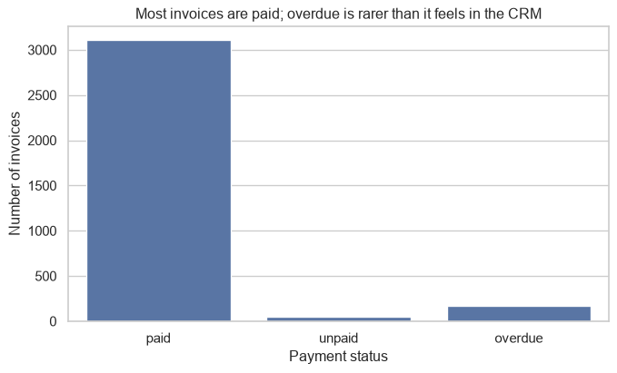
Number of HarborLink invoices by payment status.
sns.countplot counts rows.
data=invoices is the DataFrame.
x="payment_status" places the category on the horizontal axis. Each bar is one status.
order=[...] fixes the order. Without it, seaborn would follow the order of appearance in the file, which is not a story.
Interpretation. Paid invoices dominate. That is expected for a subscription business: most bills are collected. The operational attention sits in the two smaller bars. They are not interchangeable. Unpaid invoices are still inside the payment window. Overdue invoices are closed-cycle bills with no payment recorded in the table. A graph that lumped them together would mix “still waiting” with “still not paid after the due date”.
Invoices paid after the due date do not appear in the overdue bar. They remain paid. Elena’s September invoice belongs to the unpaid bar: her due date is 15 September and the extract is dated 12 September.
4.4 Part 2 — Distributions, rates and comparisons
4.4.1 Do not plot a number before asking what it can be
amount looks numerical. A histogram is the reflex.
fig, ax = plt.subplots()sns.histplot(data=invoices, x="amount", bins=20, ax=ax)ax.set_xlabel("Invoice amount (EUR)")ax.set_ylabel("Number of invoices")ax.set_title("Amount is not a smooth distribution: it is three catalogue prices")plt.show()
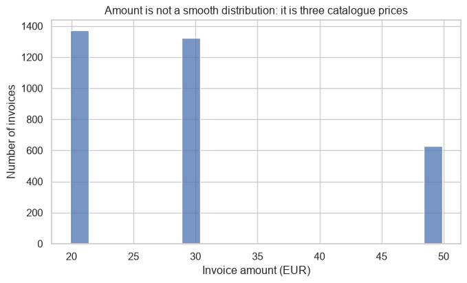
Invoice amounts. The three spikes are the three HarborLink plans.
sns.histplot counts how many rows fall into intervals of x.
bins=20 asks for twenty intervals. The exact number is less important than the shape.
Interpretation. There are no amounts between the spikes. HarborLink does not bill “around 30 euros”. It bills starter 19.90, standard 29.90 and premium 49.90. A histogram was the wrong default. The honest graph is a bar of plans.
fig, ax = plt.subplots()sns.countplot( data=invoices, x="subscription_type", order=["starter", "standard", "premium"], ax=ax,)ax.set_xlabel("Subscription plan")ax.set_ylabel("Number of invoices")ax.set_title("Starter and standard produce most of the billing volume")plt.show()
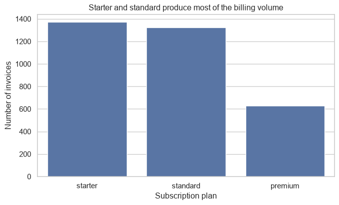
Number of invoices by subscription plan.
Premium is the smallest group of invoices. If premium later has a lower outstanding rate, that rate is estimated on fewer rows. Sample size must travel with the comparison.
4.4.2 Counts answer volume; rates answer risk
How many outstanding invoices come from SMB customers?
Most outstanding invoices are SMB. That does not yet mean SMB customers pay worse. SMB is also the largest group, so they contribute more of everything.
The right comparison is the rate: the share of invoices that are outstanding inside each segment.
fig, ax = plt.subplots()sns.barplot( data=invoices, x="segment", y="is_outstanding", order=["smb", "mid-market", "enterprise", "unknown"], errorbar=("ci", 95), ax=ax,)ax.set_xlabel("Customer segment")ax.set_ylabel("Share of invoices outstanding")ax.set_title("SMB and mid-market rates are close; enterprise is a little lower")ax.set_ylim(0, 0.15)plt.show()
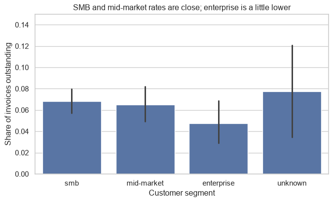
Outstanding invoice rate by customer segment. The bar is a mean of a 0/1 variable.
y="is_outstanding" asks seaborn for the mean of that column in each x group.
errorbar=("ci", 95) draws a 95% confidence interval around that mean. If the interval is wide, a small difference between bars is not a reliable finding.
set_ylim(0, 0.15) starts the vertical axis at zero. Cutting the axis at 0.04 and 0.08 would make a 1–2 point gap look dramatic.
Interpretation. Enterprise invoices are outstanding a little less often (around 5%) than SMB or mid-market (around 6.5–7%). The unknown-segment group is small and slightly higher. The gaps are modest. A slide that said “SMB is the problem segment” would overstate what the table supports. What is true is that SMB generates most of the workload, because it is the largest volume.
The same logic for the plan:
fig, ax = plt.subplots()sns.barplot( data=invoices, x="subscription_type", y="is_outstanding", order=["starter", "standard", "premium"], errorbar=("ci", 95), ax=ax,)ax.set_xlabel("Subscription plan")ax.set_ylabel("Share of invoices outstanding")ax.set_title("Premium invoices are outstanding less often, on a smaller base")ax.set_ylim(0, 0.15)plt.show()
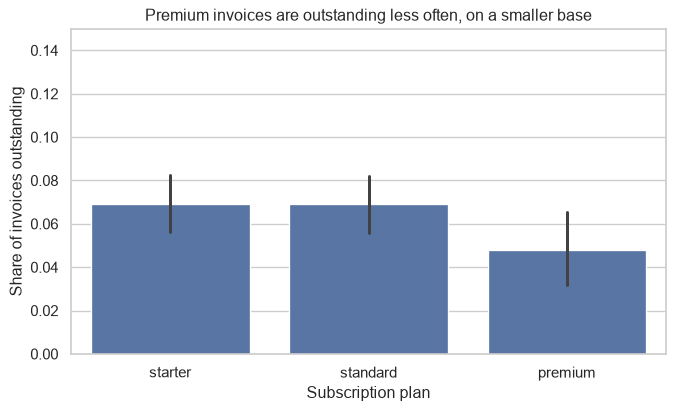
Outstanding invoice rate by subscription plan.
Interpretation. Starter and standard look alike. Premium is lower, with a wider interval because there are fewer premium invoices. We may still treat premium as a milder risk group, but we should not invent a large commercial story from a two-point gap.
4.4.3 How fast do customers pay when they pay?
days_to_pay is defined only for paid invoices. Plotting it on the full table would mix real delays with missing values.
count 3108.000000
mean 9.653153
std 5.453142
min 2.000000
25% 5.000000
50% 9.000000
75% 12.000000
max 24.000000
Name: days_to_pay, dtype: float64
describe() summarises a numerical column: count, mean, quartiles, minimum, maximum. Among paid invoices, the typical delay is about 9–10 days after the invoice date. The slowest recorded payments take 24 days.
fig, ax = plt.subplots()sns.histplot(data=paid, x="days_to_pay", bins=range(0, 27), ax=ax)ax.set_xlabel("Days from invoice date to payment")ax.set_ylabel("Number of paid invoices")ax.set_title("Most paid invoices are settled within about two weeks")plt.show()
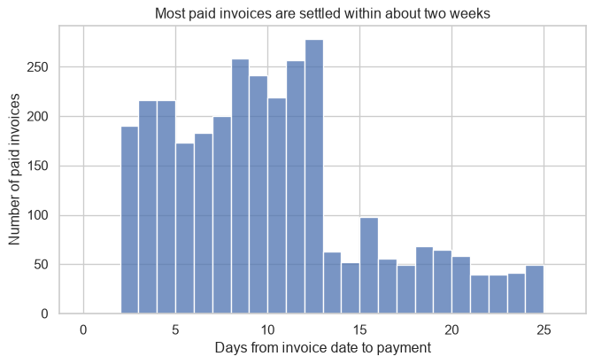
Distribution of days from invoice date to payment, paid invoices only.
bins=range(0, 27) puts a bar on each integer day. That is appropriate because delays are stored as whole days.
Interpretation. Collection is generally fast. The right-hand tail is the group that pays after the due date even though the invoice eventually becomes paid. That group is not “outstanding” in the snapshot, but it is operationally late.
paid["paid_after_due"].mean()
np.float64(0.1714929214929215)
About 17% of paid invoices were settled after the due date. A dashboard that only shows overdue would miss this milder form of lateness.
A boxplot compares the same delay across plans:
fig, ax = plt.subplots()sns.boxplot( data=paid, x="subscription_type", y="days_to_pay", order=["starter", "standard", "premium"], ax=ax,)ax.set_xlabel("Subscription plan")ax.set_ylabel("Days to payment")ax.set_title("Payment speed is similar across plans; the boxes overlap")plt.show()
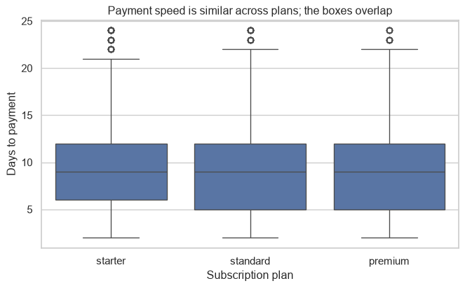
Days to payment by plan, among paid invoices.
The box runs from the 25th to the 75th percentile.
The line inside the box is the median.
The whiskers cover the more extreme typical values; points beyond them are plotted individually.
Interpretation. The three boxes sit on top of one another. If finance wanted faster cash, changing the mix of plans would not be the first lever suggested by this picture.
4.4.4 Country: look at the sample size before the ranking
fig, ax = plt.subplots()sns.barplot( data=invoices, x="country", y="is_outstanding", order=rate_by_country.index, errorbar=("ci", 95), ax=ax,)ax.set_xlabel("Country")ax.set_ylabel("Share of invoices outstanding")ax.set_title("Country gaps are small; Ireland has fewer invoices than Belgium")ax.set_ylim(0, 0.16)plt.show()
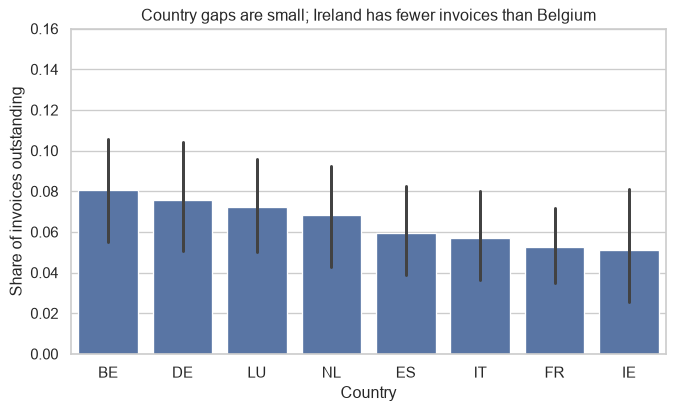
Outstanding rate by country, with 95% confidence intervals.
Interpretation. Belgium sits at the top of this ranking, Ireland and France at the bottom. The differences are a few percentage points, and some countries have fewer invoices (Ireland in particular). Ranking eight countries on a 5–8% outcome is fragile. It is honest to say “Belgium currently has a slightly higher outstanding share” and dishonest to say “the Belgian market is structurally non-paying”.
4.5 Part 3 — Time, the CRM, and what we may tell the business
4.5.1 Volume over time is not the same as risk over time
As HarborLink acquired customers, the number of invoices per month grew. A rise in the number of outstanding invoices can be a growing book, not a growing problem.
fig, ax = plt.subplots()sns.lineplot(data=monthly, x="period", y="n_invoices", marker="o", ax=ax)ax.set_xlabel("Billing month")ax.set_ylabel("Number of invoices")ax.set_title("More customers means more invoices; late 2024 is a thin sample")plt.xticks(rotation=45)plt.tight_layout()plt.show()
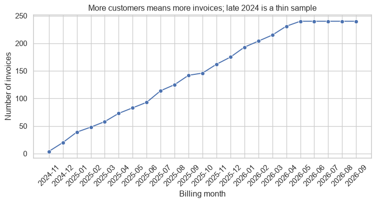
Number of invoices issued each month. The book of business is growing.
sns.lineplot connects values in the order of x.
marker="o" puts a point on each month so that we can see the thin early sample.
plt.xticks(rotation=45) tilts the month labels so they do not overlap.
tight_layout() reduces clipped labels.
Interpretation. Early months have very few invoices. A 25% outstanding rate in November 2024 would be one invoice. We should not start a trend story in the left-hand side of this plot.
fig, ax = plt.subplots()sns.lineplot(data=monthly, x="period", y="outstanding_rate", marker="o", ax=ax)ax.set_xlabel("Billing month")ax.set_ylabel("Share of invoices outstanding")ax.set_title("The September jump is mostly unpaid invoices that are not yet due")plt.xticks(rotation=45)plt.tight_layout()plt.show()
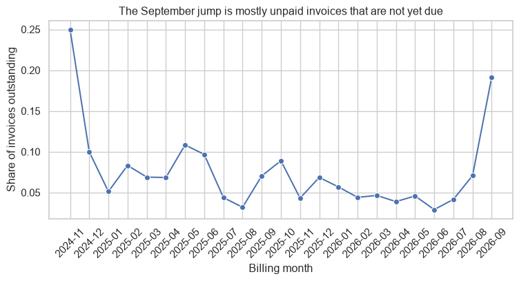
Outstanding rate by billing month. September 2026 is the current snapshot month.
Interpretation. September 2026 looks alarming if we only read the rate (around 19%). The breakdown is different: 45 invoices are unpaid and 1 is overdue, out of 240. The extract date is 12 September; September due dates are mostly 15 September. Those 45 unpaid invoices are, for a large part, still inside the payment window. August, by contrast, has no unpaid invoices and 17 overdue: the window has closed.
A graph of “outstanding rate” that does not split unpaid from overdue would push finance to treat the current month as a crisis. The honest sentence is: open items in the current cycle are expected; the stock of overdue invoices from earlier months is the collection problem.
4.5.2 CRM activity looks decisive — until we ask how it is produced
Outstanding invoices have many more CRM contacts than paid ones.
fig, ax = plt.subplots()sns.barplot( data=invoices, x="is_outstanding", y="n_interactions", errorbar=("ci", 95), ax=ax,)ax.set_xlabel("Invoice is outstanding")ax.set_ylabel("Average number of CRM contacts in the month")ax.set_title("Outstanding invoices attract contacts; that is the process, not a cause")plt.show()
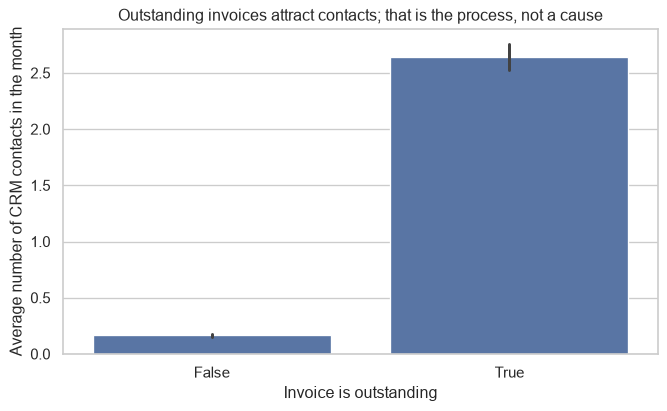
CRM contacts in the invoice month, by whether the invoice is outstanding.
fig, ax = plt.subplots()sns.barplot( data=invoices, x="is_outstanding", y="n_payment_issues", errorbar=("ci", 95), ax=ax,)ax.set_xlabel("Invoice is outstanding")ax.set_ylabel("Average number of payment-issue contacts")ax.set_title("The CRM tag tracks the finance status very closely")plt.show()
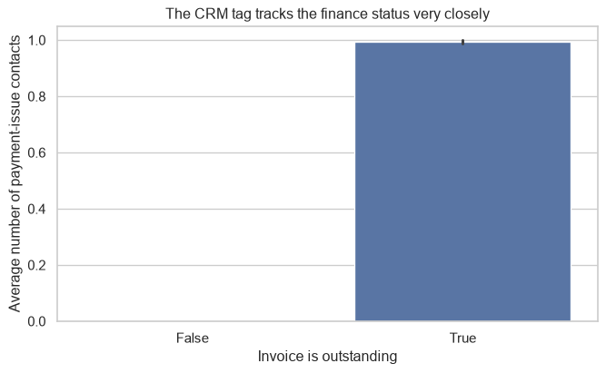
Payment-issue flags are almost confined to outstanding invoices.
Interpretation. The association is extremely strong. In this table, payment-issue contacts appear almost only when the invoice is outstanding. That is what we should expect from HarborLink’s process: reminders and “please check my payment” emails are triggered by an open invoice. They are not independent evidence that “emails cause non-payment”. Among other readings of the same numbers, contacts tagged as complaints are also a weak extra signal of risk.
A scatterplot of the same idea, with a little jitter so that overlapping points separate:
fig, ax = plt.subplots()sns.stripplot( data=invoices, x="is_outstanding", y="n_payment_issues", jitter=0.25, alpha=0.25, ax=ax,)ax.set_xlabel("Invoice is outstanding")ax.set_ylabel("Payment-issue contacts in the month")ax.set_title("Paid invoices cluster at zero CRM payment issues")plt.show()
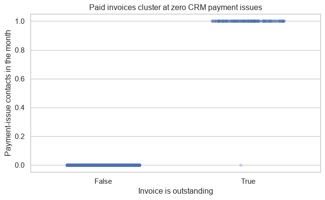
Payment-issue contacts versus outstanding status. Points are invoices.
sns.stripplot draws one point per row.
jitter moves points slightly left/right so they are not all on top of each other.
alpha=0.25 makes points translucent: dense regions look darker.
Paid invoices sit on zero. Outstanding invoices sit on one or more. The picture confirms the table. It does not add a new mechanism.
4.5.3 Put Elena back in the picture
A good EDA does not lose the original case in the averages.
elena = invoices.loc[invoices["customer_id"] ==1827].sort_values("invoice_date")elena[["period", "amount", "payment_status", "days_to_pay", "paid_after_due", "is_outstanding"]]
period
amount
payment_status
days_to_pay
paid_after_due
is_outstanding
111
2025-03
49.9
overdue
NaN
False
True
169
2025-04
49.9
paid
12.0
False
False
242
2025-05
49.9
paid
21.0
True
False
325
2025-06
49.9
overdue
NaN
False
True
418
2025-07
49.9
paid
12.0
False
False
532
2025-08
49.9
paid
19.0
True
False
657
2025-09
49.9
paid
24.0
True
False
799
2025-10
49.9
overdue
NaN
False
True
945
2025-11
49.9
paid
23.0
True
False
1107
2025-12
49.9
paid
24.0
True
False
1282
2026-01
49.9
paid
16.0
True
False
1475
2026-02
49.9
paid
20.0
True
False
1679
2026-03
49.9
paid
12.0
False
False
1894
2026-04
49.9
paid
23.0
True
False
2125
2026-05
49.9
paid
18.0
True
False
2365
2026-06
49.9
paid
17.0
True
False
2605
2026-07
49.9
paid
24.0
True
False
2845
2026-08
49.9
paid
9.0
False
False
3085
2026-09
49.9
unpaid
NaN
False
True
fig, ax = plt.subplots()sns.barplot(data=elena, x="period", y="is_outstanding", ax=ax)ax.set_xlabel("Billing month")ax.set_ylabel("Outstanding (1 = yes)")ax.set_title("Elena: three historical overdue invoices, then an unpaid September")plt.xticks(rotation=45)plt.tight_layout()plt.show()
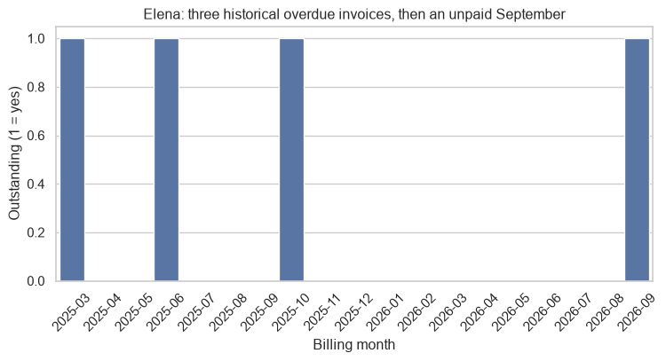
Elena Vargas: outstanding flag across billing months.
Interpretation. Elena’s history is mixed, and the status labels must be read with the definitions above. March, June and October 2025 are overdue: those three invoices still have no payment_date in the table, so they were not recorded as paid at all, even long after the due date. That is not the same as her many paid invoices with paid_after_due = True, which were collected, only after the due date. September 2026 is unpaid: the due date has not yet passed. A current-cycle reminder is still relevant for September, but the three uncollected historical invoices are already part of the overdue stock.
4.5.4 A short briefing for finance
A responsible summary is limited.
What the graphs support:
Most invoices are paid, typically within two weeks.
About 6.5% of all invoices in the panel are outstanding; overdue invoices from closed months are the true collection backlog.
The September spike is largely unpaid invoices still inside the due window.
SMB creates most of the outstanding volume because it is the largest segment, not because its rate is dramatically worse.
Premium looks slightly safer; country differences are small and should not drive a strategy on their own.
CRM payment-issue tags follow open invoices.
What the graphs do not support:
A claim that emails cause late payment.
A claim that one country “does not pay”.
A forecast, a causal model, or a machine-learning score.
Path("figures").mkdir(exist_ok=True)fig, ax = plt.subplots()sns.barplot( data=invoices.loc[invoices["period"] <"2026-09"], x="segment", y="is_outstanding", order=["smb", "mid-market", "enterprise", "unknown"], errorbar=("ci", 95), ax=ax,)ax.set_xlabel("Customer segment")ax.set_ylabel("Share of invoices outstanding")ax.set_title("Outstanding rate by segment, excluding the current September cycle")ax.set_ylim(0, 0.15)fig.savefig("figures/outstanding_rate_by_segment.png", dpi=120, bbox_inches="tight")plt.show()
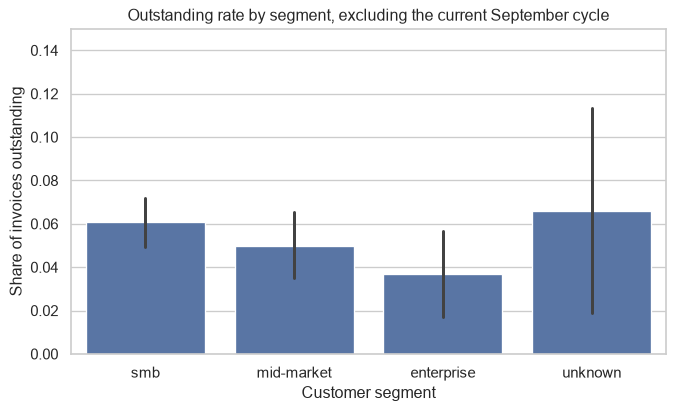
savefig writes the figure to disk. dpi=120 sets the resolution. bbox_inches="tight" crops unused margins. The last command is useful when the graph must leave the notebook and enter a slide. We excluded September so that the briefing is not dominated by invoices that are not yet due.
4.5.5 A profile for one customer
The graphs above describe the table. Finance also asks: where does this customer sit? The helper plot_customer_profile takes a customer_name or a customer_id and draws two blocks.
Above: every invoice of that customer on a time line. A blue point is paid; a red point is unpaid or overdue.
Below: one small plot per variable that still makes sense at customer level. Invoice identifiers and dates (invoice_id, period, payment_status, …) are dropped. Attributes such as country or plan are kept. Amounts and delays become means for that customer; CRM counts become sums; days_to_pay is the mean over invoices that have a payment date. Each small plot is the distribution of that summary across all customers, with this customer marked (red point or highlighted bar) and the value written under the panel.
Change the argument and re-run the cell.
from python.customer_profile import plot_customer_profileplot_customer_profile("Elena Vargas", invoices)
The same figure with the identifier:
plot_customer_profile(1827, invoices)
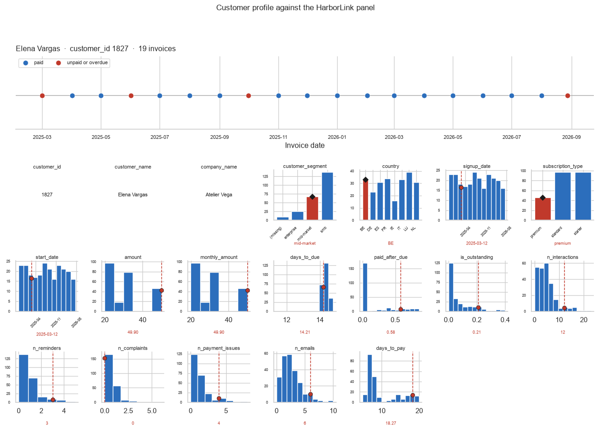
4.5.6 Towards statistical analysis
We now have pictures of volume, risk, speed, time and process. Some comparisons are small. Some charts mainly repeat a status that is already in the finance file.
The natural next step is not another gallery of charts. It is to choose an outcome (for example, overdue after the due date), choose covariates that are known before the outcome, and estimate associations with uncertainty. Visualisation remains the way those models are checked. It is no longer the whole analysis.
The path remains:
Heterogeneous sources → one invoice-level DataFrame → exploratory analysis and visualisation → statistical and machine-learning analysis